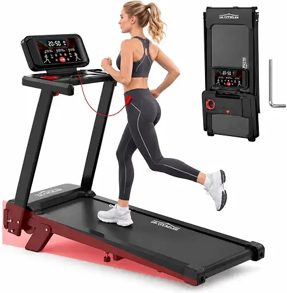
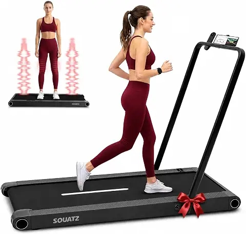
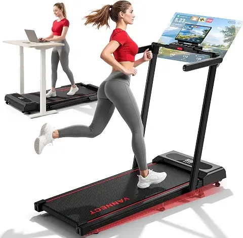

Courir en plein air est excellent pour la santé, mais entre la météo capricieuse, le manque de temps et les embouteillages, il n'est pas toujours facile de maintenir une routine régulière. C'est là que le tapis de course pliable devient votre meilleur allié.
En 2026, les fabricants ont redoublé d'ingéniosité pour proposer des modèles ultra-silencieux, compacts et connectés. Mais comment choisir parmi des centaines de références ? Notre équipe a testé et comparé les modèles les plus populaires pour vous aider à faire le bon choix.
Critères de choix : Que faut-il regarder ?
- La puissance du moteur : Visez au moins 2.0 CV pour la marche rapide et 2.5 CV pour la course à pied.
- La surface de course : Minimum 120 cm de long pour éviter de se sentir à l'étroit.
- Le système de pliage : Essentiel si vous vivez en appartement.
Notre Sélection des 3 Meilleurs Modèles

1. Le Choix Premium : Sportstech F31 (Édition 2026)
C'est le coup de cœur de notre rédaction. Avec son moteur de 2.5 CV et son système d'amortissement articulaire, il est parfait pour les coureurs réguliers. Une fois plié, il ne prend que 30 cm d'épaisseur.
Les + : Silencieux, application interactive incluse, système de pliage hydraulique.
Voir le prix sur Amazon →
2. Le Meilleur Rapport Qualité/Prix: Tapis de course pliable compact
Squatz Tapis de Marche 2-en-1 avec Plateforme Vibrante – Walking Pad Compact sous Bureau, Moteur Silencieux ≤45 DB, Écran LED, Télécommande, Surface Antidérapante, 120 kg Marque : SQUATZ
Voir le prix sur Amazon →
3. L'Alternative Compacte : Walkingpad tapis de marche pliable
Tapis de course pliable 6 en 1 avec 1 à 12 km/h, inclinaison de 9 % avec application, tapis de course sous bureau de 2,75 CV pour la maison, le bureau, machine à courir portable avec télécommande Marque : vannect
Voir le prix sur Amazon →Conclusion
Si vous avez le budget et la place, le Sportstech F31 reste l'investissement le plus durable. Pour les petits espaces, le WalkingPad révolutionnera votre quotidien. N'oubliez pas de vérifier les promotions en cours avant de valider votre panier !